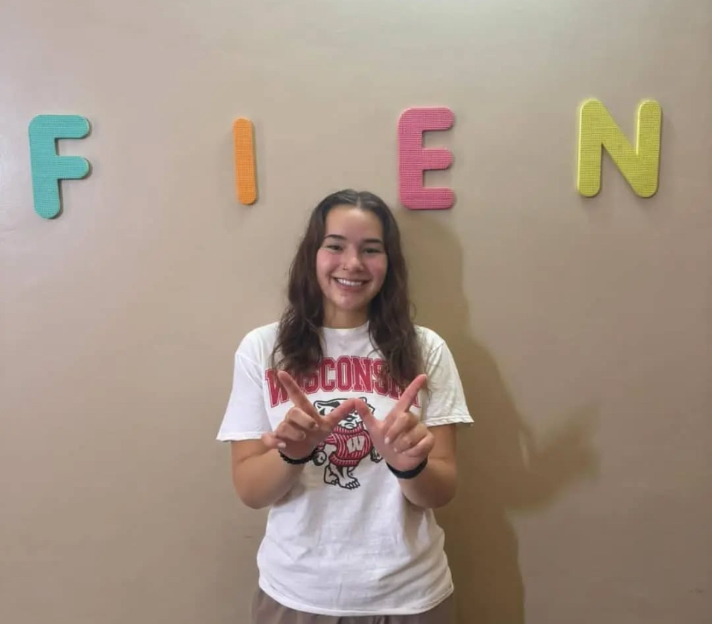
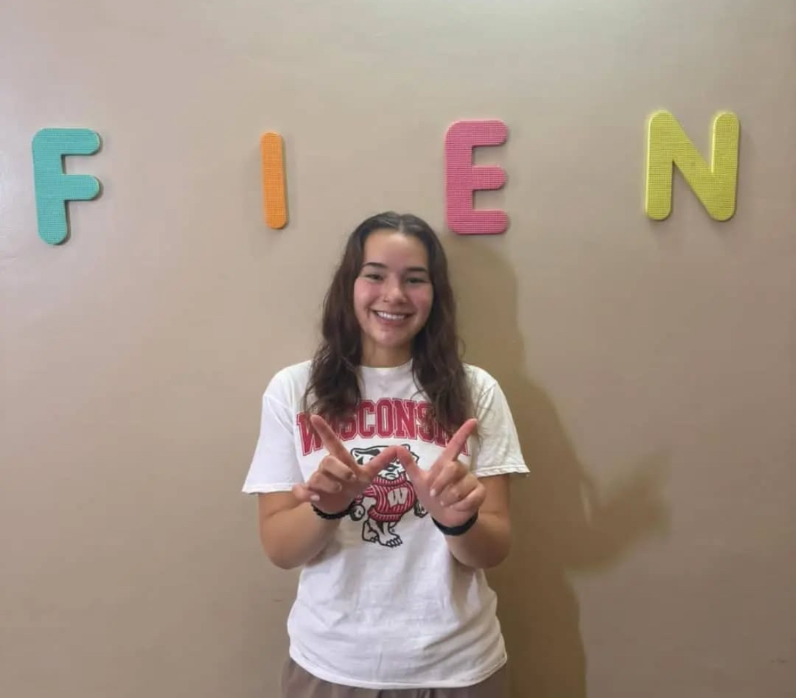

Intern with the FIEN Foundation
English Teaching Intern
- Planning and presenting lessons to facilitate students' understanding and application of English language skills (reading, writing, listening and speaking) to form one students (ages 13-15)
- Preparing and distributing learning materials such as notes, assignments, and quizzes
- Nurturing a safe and positive learning environment for students
- Grading assignments and quizzes in a timely manner
- Documenting and reporting on students' progress
Marketing & Communications Intern
- Assisting in creating and updating content for the school's website, social media platforms, newsletters, and other communication materials
- Supporting the development and implementation of communication campaigns and initiatives to promote school events, programs, and achievements
- Conducting research and collecting data on communication best practices in the education sector, including benchmarking with other schools
- Assisting in organizing and conducting surveys or focus groups to gather feedback from students, parents, and staff to improve communication strategies
- Collaborating with the communication team to ensure consistent branding and messaging across various communication channels
- Assisting in monitoring and analyzing social media metrics and trends to identify areas for improvement or potential opportunities
- Providing support during school events, such as taking photographs, creating promotional materials, and maintaining a social media presence
- Helping maintain a media database and establish relationships with local media outlets to promote school activities and achievements
Information & Communications Technology Intern
- Planning lessons and activities that facilitate students' acquisition of basic and advanced computer skills
- Instructing in a manner that develops students' confidence in their abilities
- Observing and managing classroom dynamics
- Supervising and grading projects, quizzes, and examinations
- Tracking and communicating students' advancement throughout the course
- Ensuring that the computer laboratory remains free from food and drink at all times
- Downloading important software updates and maintaining hardware
- Attending parent-teacher and faculty conferences
Web Development Intern
- Development and Design: Creating visually appealing, user-friendly, and responsive website that reflect the school's brand and values. This involves coding and markup languages such as HTML, CSS, JavaScript, and content management systems (CMS) like WordPress or Drupal
- Content Management: Ensuring the website has regularly updated content, including news, events, announcements, calendars, and academic information. This involves collaborating with school staff to collect and update appropriate content
- User Experience (UX): Ensuring the website offers an intuitive and seamless user experience, making it easy for students, parents, and staff to navigate and find the information they need. Conducting user testing and incorporating feedback to improve site functionality and usability
- Integrations and Tools: Implementing and maintaining various plugins, extensions, and tools necessary for the website, such as online forms, grade portals, and student information systems (SIS) integration
- Security and Maintenance: Ensuring the website is secure from potential threats and regularly maintaining and updating software, plugins, and themes to ensure optimal performance and security
- Assisting with additional tasks including mobile responsiveness, Search Engine Optimization (SEO), troubleshooting and support

 
